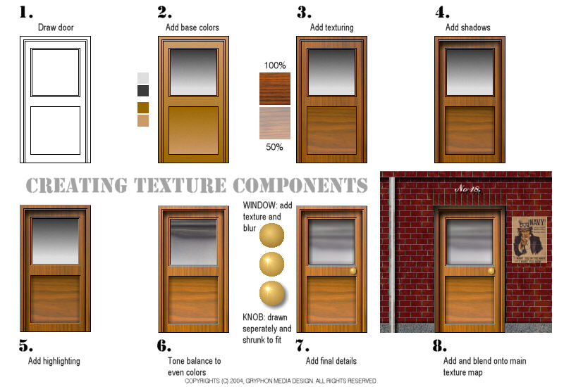

Rendering Parts Texturing Tips
[
Steam4me Main Tutorial Index
] [
SECTION INDEX
]

[
Steam4me Main Tutorial Index
] [
SECTION INDEX
] [
Top of Page
]
Copyrights © 2004-2007, Sean Lim. All Rights Reserved. Hosted courtesy of steam4me with permission.